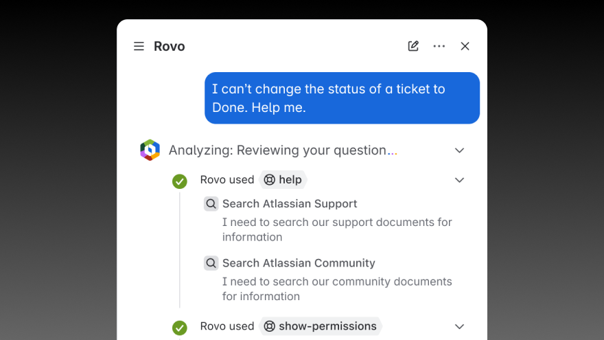
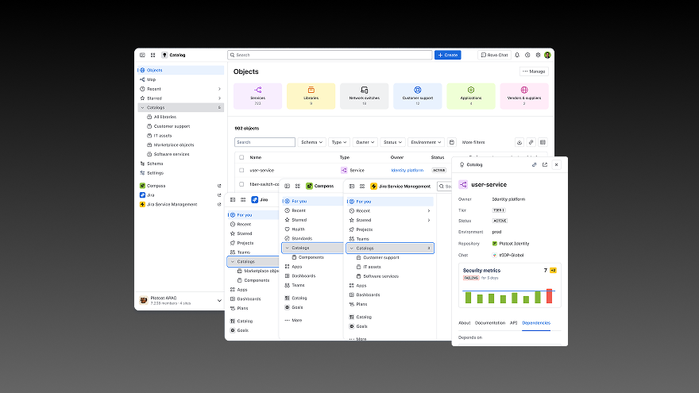
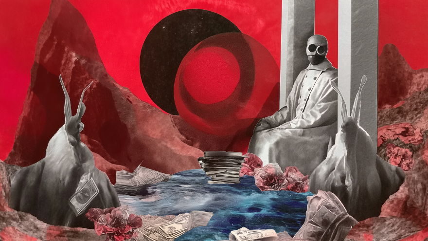
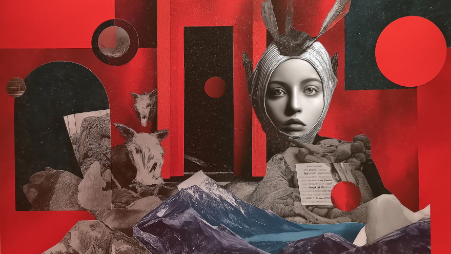
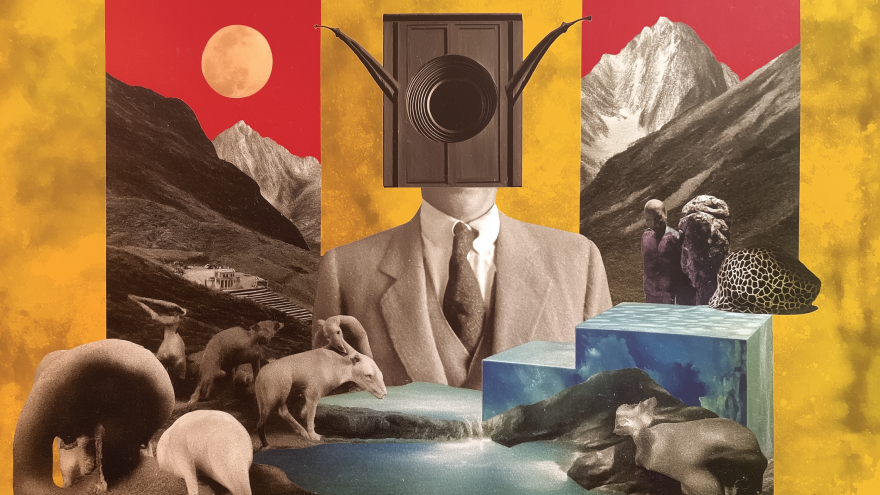
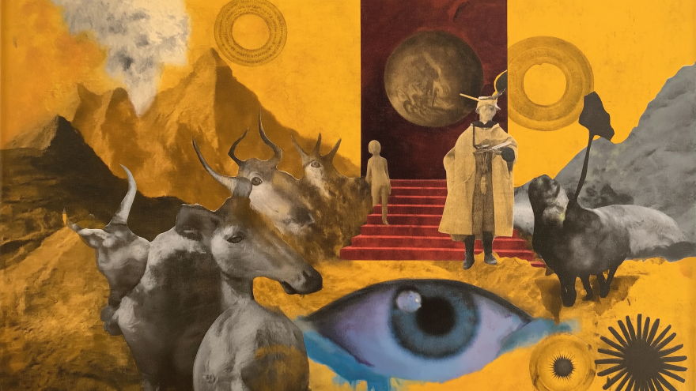

Sam Irons
Design leader and principal-level contributor. Associate Design Director at Octopus Deploy.
Featured work
Selected projects that demonstrate strategic thinking, user research, and innovative design solutions.

Atlassian's AI-driven help and support
Exploring how AI can transform help and support across Atlassian’s products. I led a design sprint to envision a unified, conversational assistance model—one that moves from answering questions to taking action.
Read case study
Service catalog consolidation
Coordinating and proposing a new platform app to consolidate service and asset catalog capabilities across Jira Service Management, Assets, Compass, and Atlassian's System of Work.
Read case studyPublications
Selected projects that demonstrate strategic thinking, user research, and innovative design solutions.

Take back control of your design practice with personal rituals
Published in Bootcamp
Read on Medium
Experience debt - what it is, how to measure it, and how to pay it down
Published in Designing Atlassian
Read on MediumPast work
Selected projects that demonstrate strategic thinking, user research, and innovative design solutions.

Invisible work
A design strategy for addressing ad-hoc work in Atlassian’s flagship product Jira Software.
Read case study
Open DevOps vision
Defining Atlassian’s strategic vision for helping software teams transition from Agile to modern DevOps methodologies.
Read case study